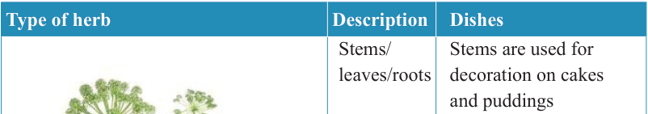
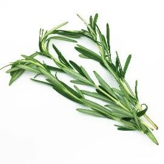
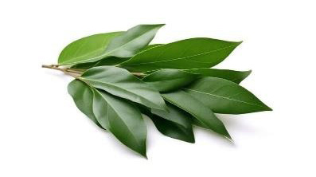
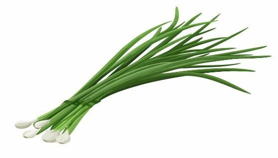

10


Food and Human Nutrition

Form Two

Type of herb
Description
Dishes
Angelica
Stems/ leaves/roots
Stems are used for decoration on cakes and puddings
Roots are used for flavouring some beverages
Leaves
are
used
in
making fruit salad and garnishing foods like roasted meat

Rosemary
Leaves
Leaves are used in dishes
like
roasted
lamb, chicken, fish and egg dishes

Bay
Leaves
Soups, meat and fish stews

Chives
Leaves
Salads, vegetable soups, omelettes, cream cheese and meat broth

17/09/2025 16:30